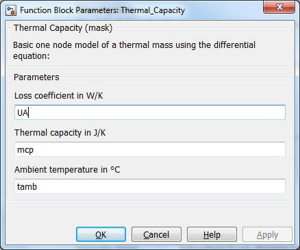

Thermal Capacity
Path: CARNOT/Basic/Thermal_Models
Purpose
One node model of a
thermal capacity with entering massflow and losses to ambien. This block breaks the direct feedthrough of any incoming temperature vector.
Description
The block breaks the incoming temperature vector and integrates it according
to:
mcap
* dT/dt = UA_loss * (Tamb
- Tnode)
+ mdot * cp
* (Tin- Tnode)
where
Characteristics
Direct Feedthrough
No
Sample time Inherited from driving block
Vectorized No
Parameters and Dialog Box
